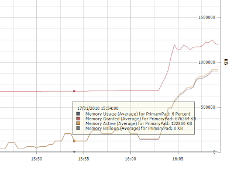
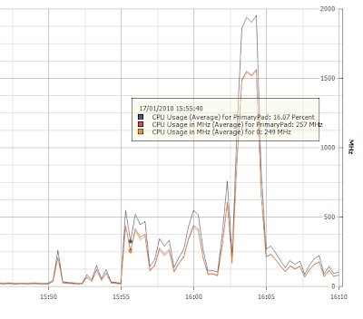
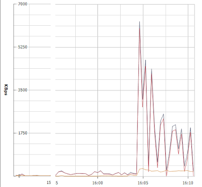

Java goes to 99% cpu very easily when stress testing etherpad, I want to find out why and how to optimize the VM to stop it happening.
After X amount of users join my CPU hits 99%, memory is fully used up and a simple end of the java process and restart isn't enough to fix the issue. The memory active (according to vmware client) is still 1.5gb+ which is .3 GB higher than the amount of memory granted. Top shows 5% Memory being used. The other VM's running on the box are using a total of 200MB Ram (very quiet unix boxes doing no work). So the Etherpad VM should have 1.8 GB available at least.
Eventually the VM catches up with reality and I can reconnect (this takes 30 minutes+). Although I usually killall java and restart during this time, this doesn't seem to help anything though..
Machine: Supermicro X7DA8 - 2 CPU x 1.6Ghz (Intel Xeon) 5110 - Hyperthreading = inactive - 2GB ram - VMWare 3i 3.5.0
Etherpad VM settings:
Max Memory use = 2GB
Reserved Memory = 750MB
Reserved CPU = 1277
Priority of access to resources = High
Etherpad is set to use 2GB(XMX) of memory in the start up script which could explain why it is trying to balloon into unavailable memory?
See below for command running Etherpad and see below that for modified command to drop XMX to 1.5GB to measure performance and avoid excessive ballooning or using non existent resources:
Old:
54.4 7.5 1777760 153760 pts/0 Sl+ 16:36 1:15 /usr/bin/java -classpath appjet-eth-dev.jar:data:lib/dnsjava-2.0.6.jar:lib/jbcrypt-0.2.jar:lib/jcommon-1.0.15.jar:lib/jfreechart-1.0.12.jar -server -Xmx2G -Xms2G -Djava.awt.headless=true -XX:MaxGCPauseMillis=500 -XX:+UseConcMarkSweepGC -XX:+CMSIncrementalMode -XX:CMSIncrementalSafetyFactor=50 -XX:+PrintGCDetails -XX:+PrintGCTimeStamps -Xloggc:./data/logs/backend/jvm-gc.log -Dappjet.jmxremote=true net.appjet.oui.main --configFile=./etc/etherpad.localdev-default.properties
New:
54.4 7.5 1777760 153760 pts/0 Sl+ 16:36 1:15 /usr/bin/java -classpath appjet-eth-dev.jar:data:lib/dnsjava-2.0.6.jar:lib/jbcrypt-0.2.jar:lib/jcommon-1.0.15.jar:lib/jfreechart-1.0.12.jar -server -Xmx1500M -Xms1500M -Djava.awt.headless=true -XX:MaxGCPauseMillis=500 -XX:+UseConcMarkSweepGC -XX:+CMSIncrementalMode -XX:CMSIncrementalSafetyFactor=50 -XX:+PrintGCDetails -XX:+PrintGCTimeStamps -Xloggc:./data/logs/backend/jvm-gc.log -Dappjet.jmxremote=true net.appjet.oui.main --configFile=./etc/etherpad.localdev-default.properties
Now for some stats with the old config -->
Experience: # of users = 24 (1500/24) = 62MB ram per user (ouch)
Etherpad did a fine job of failing to monitor the # of users on the site but thankfully I was paying attention and counted a peek of 24.
Memory:
  
VMWare catching up with reality (here you can see the VM using more memory than is available):
Retesting with XMX at 1500 gave me terrible results. Etherpad crashed after 9 people joined. Time of crash was 18:10. It then didn't respond, I had to kill the java process.
CPU:
Disk activity:
Memory activity (note how it doesn't drop at 18:10 and is probably causing the disk activity)
Java Log dump (why is this not date/time stamped?!):
34.251: [GC 34.251: [DefNew: 13184K->522K(14784K), 0.1211500 secs] 13184K->522K(1534400K), 0.1213450 secs] [Times: user=0.01 sys=0.03, real=0.13 secs]
39.273: [GC [1 CMS-initial-mark: 0K(1519616K)] 6575K(1534400K), 0.3767920 secs] [Times: user=0.02 sys=0.07, real=0.37 secs]
39.707: [CMS-concurrent-mark-start]
84.577: [CMS-concurrent-mark: 44.608/44.870 secs] [Times: user=0.44 sys=4.40, real=44.87 secs]
84.577: [CMS-concurrent-preclean-start]
84.623: [CMS-concurrent-preclean: 0.035/0.045 secs] [Times: user=0.01 sys=0.01, real=0.05 secs]
84.623: [CMS-concurrent-abortable-preclean-start]
87.783: [GC 87.783: [DefNew: 13706K->1585K(14784K), 0.0858210 secs] 13706K->1585K(1534400K), 0.0859690 secs] [Times: user=0.02 sys=0.02, real=0.09 secs]
CMS: abort preclean due to time 89.876: [CMS-concurrent-abortable-preclean: 0.117/5.253 secs] [Times: user=1.25 sys=0.83, real=5.25 secs]
89.921: [GC[YG occupancy: 7906 K (14784 K)]89.921: [Rescan (non-parallel) 89.921: [grey object rescan, 0.0047960 secs]89.926: [root rescan, 0.0577760 secs], 0.0628440 secs]89.984: [weak refs processing, 0.0$
89.986: [CMS-concurrent-sweep-start]
89.986: [CMS-concurrent-sweep: 0.000/0.000 secs] [Times: user=0.00 sys=0.00, real=0.00 secs]
89.986: [CMS-concurrent-reset-start]
90.056: [CMS-concurrent-reset: 0.070/0.070 secs] [Times: user=0.03 sys=0.01, real=0.07 secs]
92.776: [GC 92.777: [DefNew: 14769K->903K(14784K), 1.6950470 secs] 14769K->2508K(1534400K) icms_dc=5 , 1.6951700 secs] [Times: user=0.02 sys=0.23, real=1.69 secs]
96.768: [GC [1 CMS-initial-mark: 1605K(1519616K)] 8927K(1534400K), 0.0135840 secs] [Times: user=0.01 sys=0.00, real=0.01 secs]
96.785: [CMS-concurrent-mark-start]
100.464: [GC 100.464: [DefNew: 14087K->912K(14784K), 1.4546970 secs] 15692K->3399K(1534400K) icms_dc=5 , 1.4548470 secs] [Times: user=0.07 sys=0.20, real=1.46 secs]
115.141: [GC 115.141: [DefNew: 14096K->739K(14784K), 0.0521690 secs] 16583K->4135K(1534400K) icms_dc=5 , 0.0523170 secs] [Times: user=0.02 sys=0.01, real=0.05 secs]
117.331: [GC 117.331: [DefNew: 13923K->1600K(14784K), 0.0184740 secs] 17319K->5255K(1534400K) icms_dc=5 , 0.0186180 secs] [Times: user=0.02 sys=0.01, real=0.02 secs]
118.617: [GC 118.617: [DefNew: 14784K->947K(14784K), 0.2542520 secs] 18439K->6186K(1534400K) icms_dc=5 , 0.2544010 secs] [Times: user=0.01 sys=0.07, real=0.25 secs]
120.143: [CMS-concurrent-mark: 0.792/23.359 secs] [Times: user=4.92 sys=3.58, real=23.36 secs]
120.143: [CMS-concurrent-preclean-start]
120.750: [GC 120.750: [DefNew: 14131K->862K(14784K), 0.0202510 secs] 19370K->7035K(1534400K) icms_dc=5 , 0.0203990 secs] [Times: user=0.00 sys=0.01, real=0.02 secs]
122.161: [CMS-concurrent-preclean: 0.052/2.018 secs] [Times: user=0.98 sys=0.46, real=2.02 secs]
122.161: [CMS-concurrent-abortable-preclean-start]
122.970: [CMS-concurrent-abortable-preclean: 0.162/0.809 secs] [Times: user=0.12 sys=0.25, real=0.81 secs]
122.990: [GC[YG occupancy: 7696 K (14784 K)]122.990: [Rescan (non-parallel) 122.991: [grey object rescan, 0.0048130 secs]122.995: [root rescan, 0.0579420 secs], 0.0629740 secs]123.054: [weak refs processing$
123.054: [CMS-concurrent-sweep-start]
123.093: [CMS-concurrent-sweep: 0.033/0.038 secs] [Times: user=0.00 sys=0.02, real=0.04 secs]
123.093: [CMS-concurrent-reset-start]
134.807: [GC 134.807: [DefNew: 13985K->967K(14784K), 2.8277290 secs] 20157K->7990K(1534400K) icms_dc=5 , 2.8278880 secs] [Times: user=0.10 sys=0.65, real=2.82 secs]
144.742: [CMS-concurrent-reset: 0.072/21.649 secs] [Times: user=2.13 sys=4.54, real=21.65 secs]
145.145: [GC 145.146: [DefNew: 14151K->1600K(14784K), 2.2576190 secs] 21174K->14140K(1534400K) icms_dc=9 , 2.2577710 secs] [Times: user=0.04 sys=0.58, real=2.25 secs]
154.100: [GC [1 CMS-initial-mark: 12540K(1519616K)] 20142K(1534400K), 0.0342300 secs] [Times: user=0.04 sys=0.00, real=0.04 secs]
154.148: [CMS-concurrent-mark-start]
154.499: [GC 154.500: [DefNew: 14784K->627K(14784K), 0.5930520 secs] 27324K->14768K(1534400K) icms_dc=10 , 0.5932170 secs] [Times: user=0.11 sys=0.18, real=0.60 secs]
156.652: [GC 156.653: [DefNew: 13811K->1271K(14784K), 0.0159730 secs] 27952K->15412K(1534400K) icms_dc=10 , 0.0161490 secs]
{kind=link}
{kind=link}
{kind=link}
{kind=link}
{kind=link}
{kind=link}
{kind=link}
{kind=link}